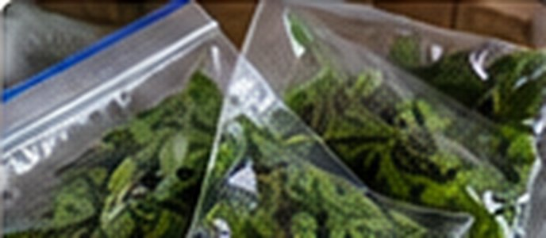

Thai Basil Freezer Portions
Thai · Approx. 15 minutes

Ingredients
- 2 packed cups fresh Thai basil leaves
- Cold water for rinsing
- Optional: 2–4 tbsp water for chopped portions
Directions
- Pick healthy basil leaves and discard tough stems. Rinse and dry very thoroughly.
- For whole leaves, spread in a single layer on a parchment-lined tray and freeze until firm.
- Transfer frozen leaves to a labeled airtight freezer bag and return immediately to freezer.
- Alternatively, finely chop dried leaves, pack into small silicone molds with a splash of water, and freeze.
- Add frozen basil directly to hot stir-fries, soups or curries near the end of cooking. Do not expect thawed leaves to retain fresh salad texture.
Notes & serving ideas
Convenient for Thai basil chicken, panang beef and coconut soups. Freeze in small portions for cooking; best flavor within 2–3 months.
Review & safe storage
Original recipe: These instructions have been reviewed against general preservation guidance, but the exact formula and shelf life have not been laboratory validated.
Keep frozen at 0°F (−18°C) or colder. Thaw at 40°F (4°C) or below in the refrigerator, or add frozen portions directly while cooking. Never thaw on the counter. Frozen storage times stated here describe quality, not a validated shelf life.
Wash hands, produce and equipment before preparation. Refrigerate perishable prepared food promptly, within 2 hours (1 hour above 90°F / 32°C). Use shallow containers for hot mixtures; do not wait for them to cool fully on the counter.
FoodSafety.gov handling and chilling guidance · Related preservation guidance
References describe general handling or the cited method; they do not validate this original recipe as a shelf-stable canning formula.